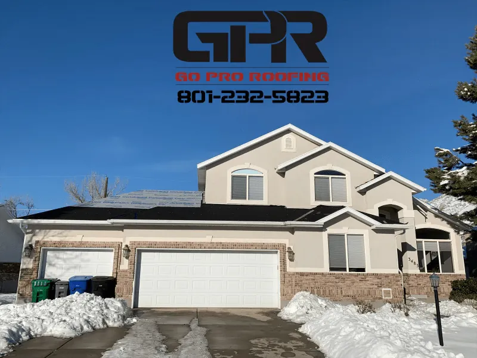

Why Energy-Efficient Roofing Is Big News for Utah Homeowners
Traditional dark roofs can soak up heat all day long, turning your attic and top floor into an oven. Modern energy-efficient roofing flips that script.
National agencies and industry groups now highlight cool roofs as one of the simplest ways to improve comfort and reduce energy use in homes and buildings. In fact:
- The U.S. Environmental Protection Agency (EPA) notes that cool roofs can reduce peak cooling demand in air-conditioned homes by 11–27%. [Source]
- Industry research shows that cool roofing technologies can reduce cooling energy use by roughly 20–30%. [Source]
- Reflective coatings can help roofs lower indoor temperatures by up to 30% compared to traditional dark roofs. [Source]
For homeowners across Utah—especially in West Valley City, Salt Lake City, Sandy, and surrounding communities—that’s welcome news. Our hot, sunny summers make your roof one of the most powerful tools you have for comfort and efficiency.
The Data: Cool Roofs Can Cut Cooling Demand by Up to 27%
Cool roofs can reduce peak cooling demand by up to 27% in air-conditioned homes.
“Peak cooling demand” is simply how hard your AC has to work on the hottest days of the year. When your roof reflects more sunlight and absorbs less heat:
- Your attic stays cooler
- Less heat radiates into your living spaces
- Your AC doesn’t have to run as long or as often
That 11–27% reduction comes from real-world buildings and real data—not a lab test. For Salt Lake Valley homes that see intense afternoon sun, choosing a more reflective roof replacement or new roofing system can translate into:
- Cooler upstairs bedrooms
- More consistent temperatures throughout the home
- Less strain on your HVAC system over time
This improvement isn’t about cutting corners—it’s about choosing smarter roofing materials that work harder for you.
What This Trend Means for You in the Salt Lake Valley
National roofing trends show demand rising for:
- Cool roof shingles and reflective underlayments
- Systems built for temperature control
- Materials designed for solar readiness
For Salt Lake City–area homeowners, the benefits are clear:
1. More Comfortable Summers
Reflective roofing helps keep your home cooler during long sunny days—especially top-floor rooms that normally run warm.
2. A Smarter Long-Term Investment
When your roof naturally reduces heat transfer, your cooling system works more efficiently and enjoys a longer lifespan.
3. A Future-Ready Roof
If you ever add solar or additional home upgrades, choosing an energy-efficient roof today makes those improvements easier later.
How a Salt Lake City Roofing Company Helps You Take Advantage
Go Pro Roofing (GPR Roofing) is already aligned with this growing movement toward energy-efficient roofing.
- Master Roofer Certified and partnered with top manufacturers
- Experts in roof replacements, inspections, and new roof installs
- Experience matching roofing materials to Utah’s climate
- Clear communication and workmanship-backed installations
With GPR Roofing, your new roof becomes more than a necessity—it becomes a comfort upgrade, a performance upgrade, and a long-term home investment.
Why Acting Now Is Good News for Your Home
Whether your roof is aging or you’re planning a remodel, this is an ideal moment to explore cool roof options. You can enjoy:
- Greater comfort in upstairs and attic-adjacent spaces
- More efficient cooling during peak summer temperatures
- A future-ready roof compatible with solar and energy upgrades
- Peace of mind knowing your roofing choice is backed by real data
This trend is all upside—better comfort, smarter efficiency, and a home that’s ready for the future.
Subtle but Powerful: Why GPR Roofing Fits This Moment
Choosing GPR Roofing means choosing a contractor who understands both the science and the local climate. With deep experience across the Salt Lake Valley, their team helps homeowners select roofing materials that maximize comfort and performance in Utah’s unique weather patterns.
You get:
- Clear, friendly explanations
- Tailored recommendations
- Professional installation
All designed to unlock the full advantages of energy-efficient roofing.
Ready to Explore an Energy-Efficient Roof?
Take your next step toward a cooler, more comfortable home:
- Request a free quote
- Explore our services
- See why customers choose us
Data Sources
| Data Claim | Source Name | Source Type | Date | URL |
|---|---|---|---|---|
| Cool roofs reduce peak cooling demand in residential buildings by 11–27%. | EPA – Using Cool Roofs to Reduce Heat Islands | Federal guidance | 2024 | View Source |
| Reflective cool roofs lower indoor temperatures by up to 30%. | American Coatings Association – Cool Roofs | Industry article | 2024 | View Source |
| Cool roofing technologies can reduce cooling energy use by 20–30%. | Gitnux – Commercial Roofing Industry Statistics | Market data report | 2025 | View Source |
What Homeowners Are Saying
Many homeowners mention Driftwood and Estate Gray as top picks for blending style and practicality. Roofers have also noticed a rise in demand for Pacific Wave and Teak due to their unique visual appeal.
Gallery of Real Homes


